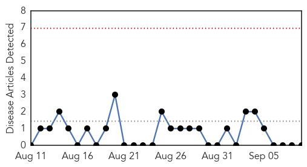
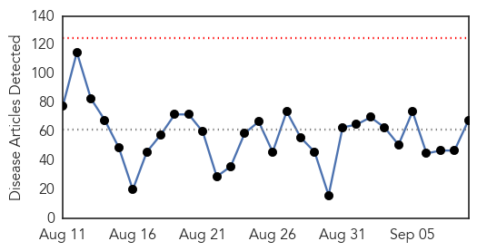
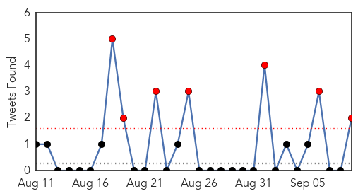

Mumps
30-Day Web Trend
0 alerts, 0 warnings

30-Day Twitter Trend
1 alerts, 0 warnings

Article Locations

Article Confidences

Top Articles:
-
No articles found for Sep 09, 2015
Top Tweets:
-
No tweets found for Sep 09, 2015
Unknown
30-Day Web Trend
0 alerts, 0 warnings

30-Day Twitter Trend
7 alerts, 0 warnings

Article Locations

Article Confidences

Top Articles:
- 0.976
- More Sick in Quincy Veterans' Home Legionnaries' Outbreak
- 0.969
- Legionnaire's Disease
- 0.967
- E.Coli outbreak on Merseyside with seven cases confirmed
- 0.963
- Doctors Suggest Getting Flu Shot Soon
- 0.946
- Zimbabwe foot and mouth outbreak worries SA and Botswana
- 0.942
- Southeast Alabama, Northwest Florida, Southwest Georgia
- 0.941
- Polio outbreak confirmed in Mali
- 0.922
- African Swine Fever devastates Eastern Europe
- 0.916
- Leprosy higher than reported, National, Phnom Penh Post
- 0.911
- Legionnaires' death toll rises to 10 in western Illinois
- 0.906
- New UC Davis study suggests that popular molecular tests over-diagnose C. difficile infections
- 0.896
- Squirrel near Lake Tahoe tests positive for plague
- 0.888
- What to Know About the Blue-Green Algae in the Ohio River
- 0.866
- A protester holding a placard shouts slogans during a rally to call for visa grants for asylum seekers in Japan, in Tokyo
- 0.859
- Alzheimer’s can be spread from human to human, explosive research claims
- 0.852
- 7 people in Nevada sickened in salmonella outbreak
- 0.850
- Salmonella Case in North Dakota Linked to Cucumbers
- 0.847
- Department of Agriculture Forestry and Fisheries
- 0.831
- First Federal Lawsuit Is Filed After Latest Outbreak
- 0.828
- Can Alzheimer's proteins be spread via medical procedures?
- 0.802
- Patient, heal thyself – POLITICO
- 0.789
- 'Seeds' of Alzheimer's 'might be transferred on medical instruments'
- 0.789
- Alzheimer's disease may be caught through medical accidents
- 0.779
- Glow in the dark chickens to combat bird flu
- 0.771
- Protein linked to Alzheimer's could be spread during surgery, say researchers
- 0.767
- 7 people in Nevada sickened in salmonella outbreak
- 0.760
- Health officials: 4 sickened in Clark Co. tied to cucumber recal
- 0.756
- Technology revolutionizes care in UNRWA health clinics
- 0.738
- 'Seeds' of Alzheimer's 'might be transferred on medical instruments'
- 0.737
- School pupil in South Ayrshire being treated for E Coli NHS confirm
- 0.735
- Woman undergoes test for Leptospirosis – BorneoPost Online
- 0.728
- Washoe County Health District Reports 3 Salmonella Cases; 4 Sick
- 0.719
- Salmonella Linked To Cucumbers Claims Life Of Texas Woman
- 0.716
- Taking the Next Step to Lead on Leave
- 0.709
- Tularemia more widespread this year, say vets
- 0.707
- Safe, Clean Drinking Water Defines Civilization
- 0.705
- Statewide immunization rates for HPV lagging
- 0.694
- Glowing in the dark, GMO chickens shed light on bird flu fight, news, Health News, AsiaOne YourHealth
- 0.690
- The Caledonian-Record
- 0.688
- 4 Southern Nevada salmonella cases linked to imported cucumbers
- 0.681
- Xanana Gusmao receives WHO public health award
- 0.679
- Cucumber salmonella outbreak hits N.D.
- 0.666
- Former health minister Sangay Ngedup honoured
- 0.663
- Alzheimer’s may have been transmitted via injections, researchers say
- 0.659
- Humans, animals face extinction from microbes resistant to antibiotics
- 0.649
- Parents on red alert as medics treat Ayr schoolgirl who has contracted E.Coli bug
- 0.642
- UN global team in Zim
- 0.641
- Children's Hormone Treatments May Have Planted Alzheimer's Seeds
- 0.630
- Children's Hormone Treatments May Have Planted Alzheimer's Seeds
- 0.610
- Alzheimer's may be transferred in some surgeries
Showing top 50 articles...
Top Tweets:
- 0.552
- .@WHO tally suggests 36% of confirmed MERS cases have died. To Sept 8 have been 1517 cases reported ~539 deaths http://t.co/Vfe7a2Cqsb
- 0.521
- MERS in Riyadh: @WHO update lists 4 sick health workers who had no known contact with cases. Are cases being missed? http://t.co/5xKFk2Zery